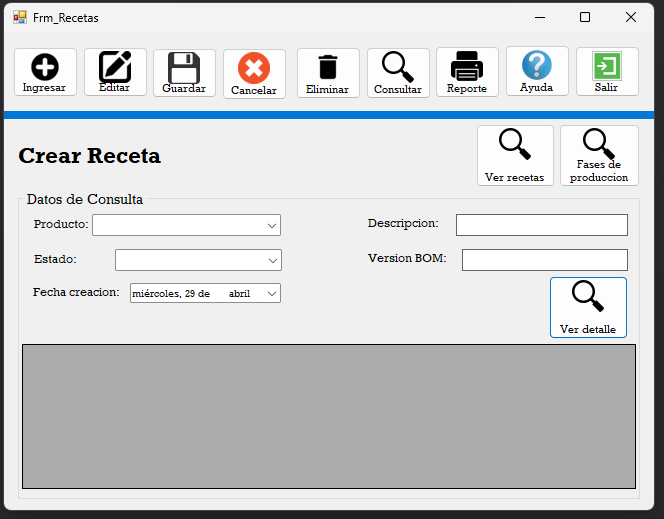
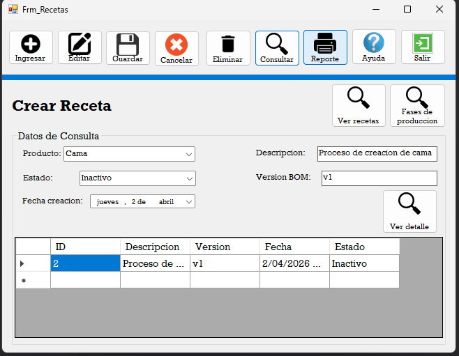
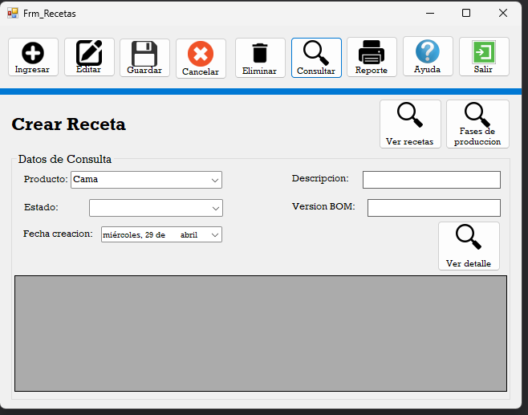
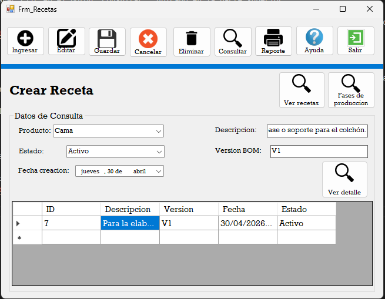
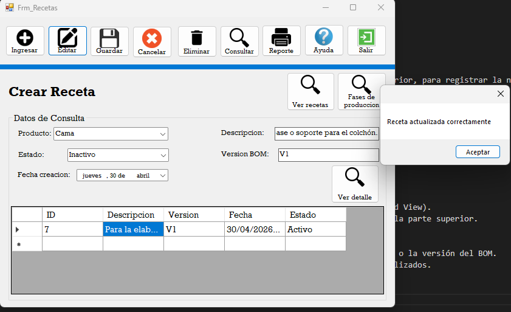
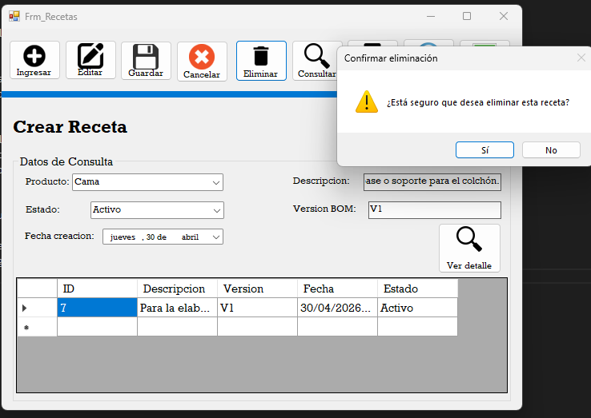

Este proceso se encargar de consultar y registrar nuevas recetas, de igual manera se puede editar y elmimar.

El proceso de este formulario es el siguiente: El usuario se encuentra en el formulario de creación de recetas, donde deberá seleccionar un producto. Posteriormente, deberá hacer clic en el botón “Consultar”, ubicado en la parte superior. Al realizar esta acción, el sistema mostrará la información correspondiente, en caso de que el producto seleccionado ya cuente con una receta registrada.

En caso de que el producto seleccionado no cuente con una receta registrada, el usuario podrá crear una nueva.
Para ello, deberá completar los campos correspondientes del formulario:
Descripción: se detalla la información de los componentes o materiales necesarios para la fabricación del producto.
Estado: indica si la receta se encuentra activa o inactiva.
Versión del BOM: especifica la versión de la lista de materiales asociada a la receta.
Fecha de creación: corresponde a la fecha en la que se registra la receta.
Una vez completados todos los campos, el usuario deberá hacer clic en el botón “Guardar”, ubicado en la parte superior, para registrar la nueva receta en el sistema.


A continuación, se describe el proceso para editar y eliminar una receta dentro del sistema:
Para realizar cualquiera de estas acciones, el usuario deberá seleccionar un registro dentro de la tabla (Data Grid View).
Al seleccionarlo, los datos correspondientes se cargarán automáticamente en los campos del formulario ubicados en la parte superior.
Edición de receta:
Una vez cargados los datos, el usuario podrá modificar la información en los campos que desee, como la descripción o la versión del BOM.
Posteriormente, deberá hacer clic en el botón “Editar”, ubicado en la parte superior, para guardar los cambios realizados.
El sistema actualizará la información en la tabla automáticamente.

Eliminación de receta:
Para eliminar una receta, el usuario deberá seleccionar el registro en la tabla.
Luego, hacer clic en el botón “Eliminar”.
El sistema mostrará un mensaje de confirmación para validar la acción.
Si el usuario confirma, el registro será eliminado del sistema.
